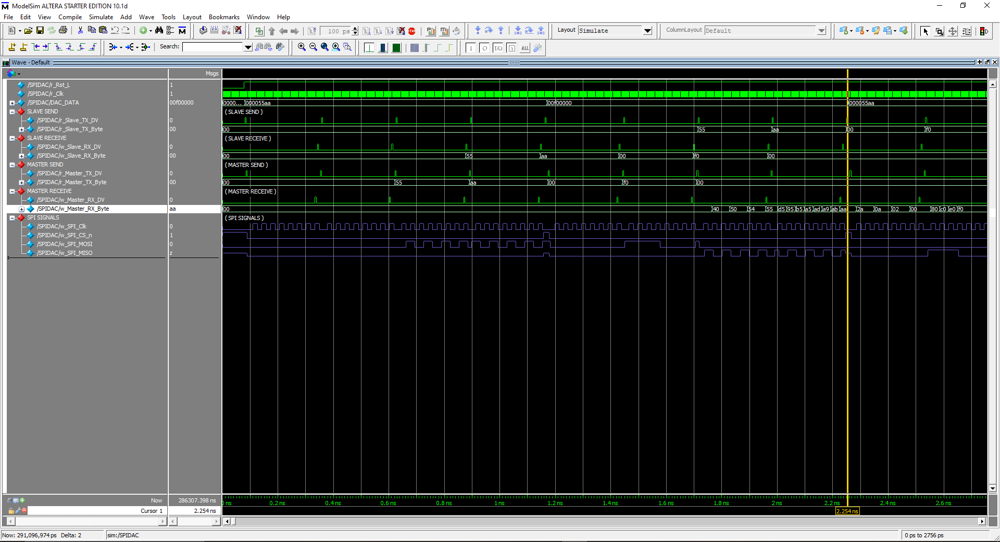

Projects



My Name is Benjamin Weinel
I am currently working toward a masters degree in electrical engineering at the University of Delaware. I have a bachelors in electrical engineering as well as computer science and cybersecurity minors. I have been on the school's deans list since my second semester with a cumulative GPA of 3.712/4.0
The main things I have learned during my time at school include circuit design and programming. Though my major I studied analog IC design and VLSI design, learing industry standard tools such as Cadence Virtuoso and Cadence Spectre. I have done research for the Analog Mixed Signal and Photonic Integrated Circuits including work related to analog IC design and FPGA design through Quartus and multisim. Throughout my engineering degree and computer science minor, I have learned a plethora of languages varying from hardware programming languages such as VHDL and verilog to web design languages like HTML and CSS which were used to make this site! Specifically my minors have given me a solid background for data stuctures and operating systems as well as robust understanding of linux thorugh my cybercecurity classes.
Languages: Verilog, VHDL, C, C++, Java, HTML, CSS, MATLAB, Bash, Python.
Software: Cadence Virtuoso, Quartus II, Modelsim, NGSpice, Vivado, Linux, VScode, Android Studio.
For the past two summers I have done research with Dr. Vishal Saxena at the AMPIC Lab at the University of Delaware. The first summer at the lab I designed a interface for a family of analog to digital converters, and digital to analog converters in verilog and tested the design on a Cyclone III FPGA. The next year I automated the gm/id design process for the Skywater 130nm process using ngspice scripts and python. This automation is "X" amount faster than a manual charecterization. The same year, I studied materials on mixed signal design covering SAR ADCs, Flash ADCS, MDACs, and noise analysis. A deeper dive of these projects is available in the Projects section of this website.
2x University of Delaware Research Day Winner
• Senior Design Category: Firefighter Monitor.
• Undergraduate Research Category: Verilog LTC2668 and LTC2494 interface.